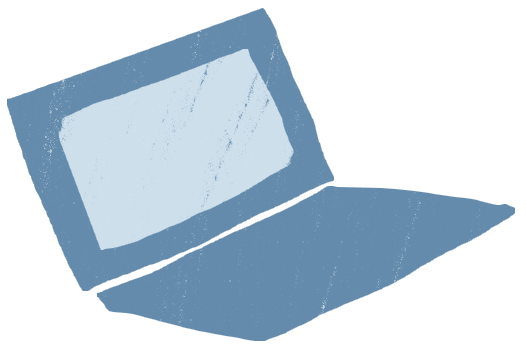
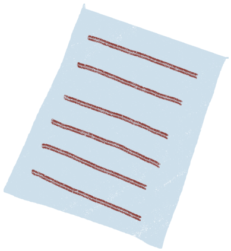
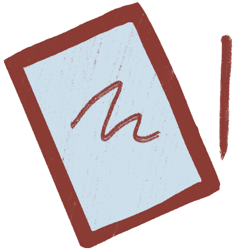

Наведите на объект для получения информации
«Как чувствовал себя Гагарин в полете?» - «Как последняя собака».
1 из 20
Картер говорит, что если Брежнев не выведет войска из Афганистана, он добьется проведения в СССР еще одной Олимпиады.
1 из 13
Пришел Горбачев в гастроном, встал в очередь. Видит - всем продают водку. Он тоже: "Мне бутылку "Столичной" ". - "А вам не продам!" - "Почему?" - Приходите в четырнадцать, согласно вашему указу..."
1 из 28
А/р «Отчего взорвался реактор?» — «Оттого, что цепная реакция пошла путем ускоренного развития».
1 из 32
Екатерина Чикирева
Ирина Яблонская
Ксения Секисова
